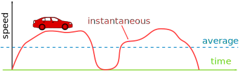
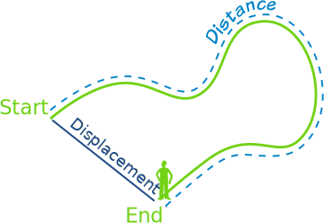
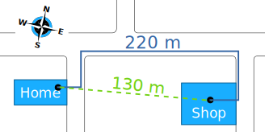

Speed and Velocity
Speed and Velocity
Speed is how fast something moves.
Velocity is speed with a direction.
Saying Ariel the Dog runs at 9 km/h (kilometers per hour) is a speed.
But saying he runs 9 km/h Westwards is a velocity.
| Speed | Velocity | |
|---|---|---|
| Has: | magnitude | magnitude and direction |
| Example: | 60 km/h | 60 km/h North |
| Example: | 5 m/s | 5 m/s upwards |
Imagine something moving back and forth very fast: it has a high speed, but a low (or zero) velocity.
Speed
Speed is measured as distance moved over time.
Speed = Distance Time
Example: A car travels 50 km in one hour.
Its average speed is 50 km per hour (50 km/h)
Speed = Distance Time = 50 km 1 hour
We can also use these symbols:
Speed = Δs Δt
Where Δ ("Delta") means "change in", and
- s means distance ("s" for "space")
- t means time
Example: You run 360 m in 60 seconds.
So your speed is 6 meters per second (6 m/s).
Units
Speed is commonly measured in:
- meters per second (m/s or m s-1), or
- kilometers per hour (km/h or km h-1)
A km is 1000 m, and there are 3600 seconds in an hour, so we can convert like this (see Unit Conversion Method to learn more):
1 m 1 s × 1 km 1000 m × 3600 s 1 h = 3600 m · km · s 1000 s · m · h = 3.6 km 1 h
So 1 m/s is equal to 3.6 km/h
Example: What is 20 m/s in km/h ?
20 m/s × 3.6 km/h 1 m/s = 72 km/h
Example: What is 120 km/h in m/s ?
120 km/h × 1 m/s 3.6 km/h = 33.333... m/s
Average vs Instantaneous Speed
The examples so far calculate average speed: how far something travels over a period of time.
But speed can change as time goes by. A car can go faster and slower, maybe even stop at lights.

So there is also instantaneous speed: the speed at an instant in time. We can try to measure it by using a very short span of time (the shorter the better).
Example: Sam uses a stopwatch and measures 1.6 seconds as the car travels between two posts 20 m apart. What is the instantaneous speed?
Well, we don't know exactly, as the car may have been speeding up or slowing down during that time, but we can estimate:
20 m 1.6 s = 12.5 m/s = 45 km/h
It is really still an average, but is close to an instantaneous speed.
Constant Speed
When the speed does not change it is constant.
For constant speed, the average and instantaneous speeds are the same.
Velocity
Velocity is speed with a direction.
It is actually a vector ...

... as it has magnitude and direction
Because the direction is important velocity uses displacement instead of distance:

Speed = Distance Time
Velocity = Displacement Time in a direction.
Example: You walk from home to the shop in 100 seconds, what is your speed and what is your velocity?

Speed = 220 m 100 s = 2.2 m/s
Velocity = 130 m 100 s East = 1.3 m/s East
You forgot your money so you turn around and go back home in 120 more seconds: what is your round-trip speed and velocity?
The total time is 100 s + 120 s = 220 s:
Speed = 440 m 220 s = 2.0 m/s
Velocity = 0 m 220 s = 0 m/s
Yes, the velocity is zero as you ended up where you started.
Learn more at Vectors.
Relative
Motion is relative. When we say something is "at rest" or "moving at 4 m/s" we forget to say "in relation to me" or "in relation to the ground", etc.
Think about this: are you really standing still? You are on planet Earth which is spinning at 40,075 km per day (about 1675 km/h or 465 m/s), and moving around the Sun at about 100,000 km/h, which is itself moving through the Galaxy.
Next time you are out walking, imagine you are still and it is the world that moves under your feet. Feels great.
It is all relative!